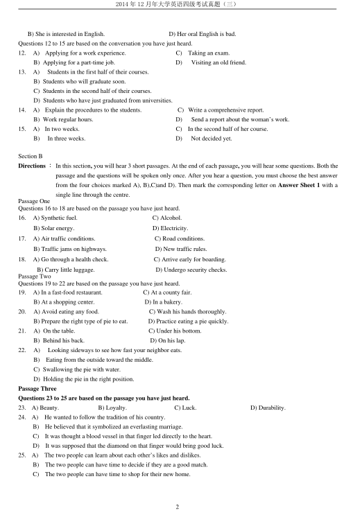
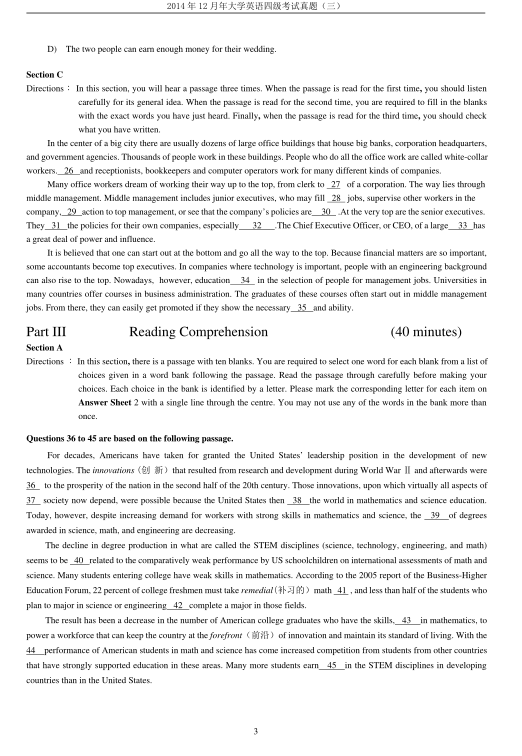
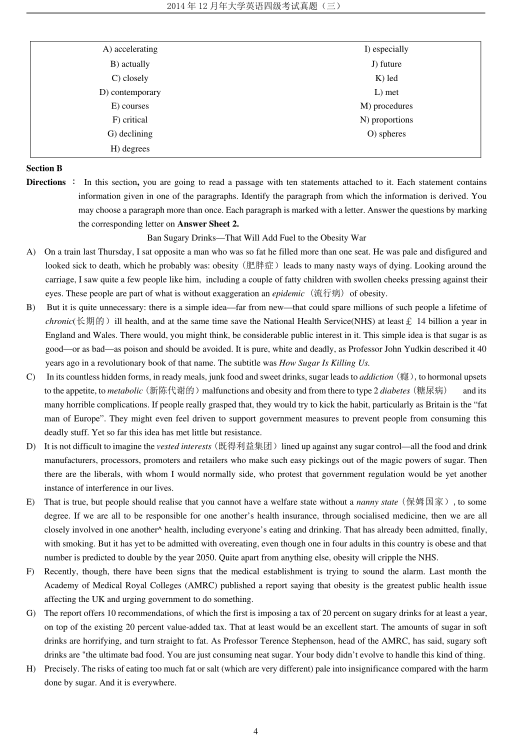
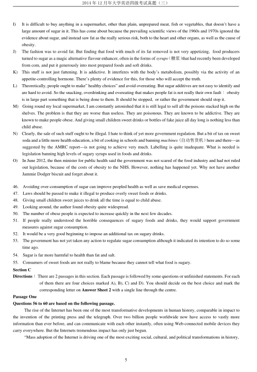
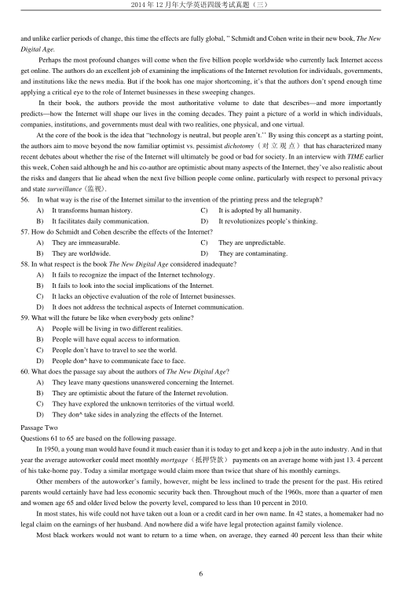
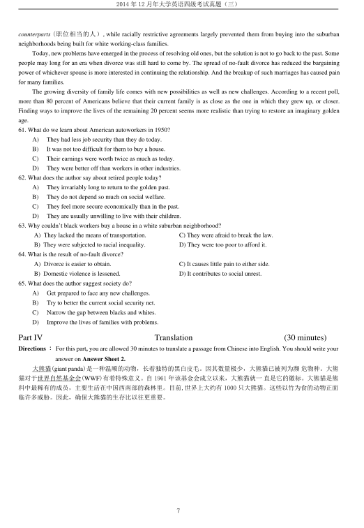

第 1 / 7 页

2014 年12 月年大学英语四级考试真题（三）
1
2014 年12 月大学英语四级考试真题（第3 套)
Part I
Writing
(30 minutes)
Directions：For this part, you are allowed 30 minutes to write a short essay about a campus activity that has benefited you
most. You should state the reasons and write at least 120 words but no more than 180 words.
Part II
Listening Comprehension
(30 minutes)
Section A
Directions ：In this section, you will hear 8 short conversations and 2 long conversations. At the end of each conversation, one
or more questions will be asked about what was said. Both the conversation and the questions will be spoken only
once. After each question there will be a pause. During the pause, you must read the four choices marked A), B), C)
and D), and decide which is the best answer. Then mark the corresponding letter on Answer Sheet 1 with a single
line through the centre.
1.
A) The man hates to lend his tools to other people.
B) The man hasn’t finished working on the bookshelf.
C) The tools have already been returned to the woman.
D) The tools the man borrowed from the woman are missing.
2.
A)
Save time by using a computer.
C)
Borrow Martha’s computer.
B)
Buy her own computer.
D)
Stay home and complete her paper.
3.
A)
The man doesn’t have money for his daughter’s graduate studies.
B)
The man doesn’t think his daughter will get a business degree.
C)
The man insists that his daughter should pursue her studies in science.
D)
The man advises his daughter to think carefully before making her decision.
4.
A) The cinema is some distance away from where they are.
B)
He would like to read the film review in the newspaper.
C)
They should wait to see the movie at a later time.
D)
He’ll find his way to the cinema.
5.
A)
He’s been to Seattle many times.
C)
He has a high position in his company.
B) He has chaired a lot of conferences.
D)
He lived in Seattle for many years.
6.
A)
Teacher and student.
C)
Manager and office worker.
B)
Doctor and patient.
D)
Travel agent and customer.
7.
A) She knows the guy who will give the lecture.
B) She thinks the lecture might be informative.
C)
She wants to add something to her lecture.
D) She’ll finish her report this weekend.
8.
A)
The houses for sale are of poor quality.
B)
The houses are too expensive for the couple to buy.
C) The housing developers provide free trips for potential buyers.
D) The man is unwilling to take a look at the houses for sale.
Questions 9 to 11 are based on the conversation you have just heard.
9.
A) How to study English well.
C) How to write computer games.
B) Which courses to choose.
D) Which books to read.
10. A) Physical sciences.
C) Art and design.
B) Maths and physics.
D) Electronics and computer-programming.
11. A) Her English is very good.
C) Her English writing is poor.
查看 / 复制本页文字
2014 年12 月年大学英语四级考试真题（三） 1 2014 年12 月大学英语四级考试真题（第3 套) Part I Writing (30 minutes) Directions：For this part, you are allowed 30 minutes to write a short essay about a campus activity that has benefited you most. You should state the reasons and write at least 120 words but no more than 180 words. Part II Listening Comprehension (30 minutes) Section A Directions ：In this section, you will hear 8 short conversations and 2 long conversations. At the end of each conversation, one or more questions will be asked about what was said. Both the conversation and the questions will be spoken only once. After each question there will be a pause. During the pause, you must read the four choices marked A), B), C) and D), and decide which is the best answer. Then mark the corresponding letter on Answer Sheet 1 with a single line through the centre. 1. A) The man hates to lend his tools to other people. B) The man hasn’t finished working on the bookshelf. C) The tools have already been returned to the woman. D) The tools the man borrowed from the woman are missing. 2. A) Save time by using a computer. C) Borrow Martha’s computer. B) Buy her own computer. D) Stay home and complete her paper. 3. A) The man doesn’t have money for his daughter’s graduate studies. B) The man doesn’t think his daughter will get a business degree. C) The man insists that his daughter should pursue her studies in science. D) The man advises his daughter to think carefully before making her decision. 4. A) The cinema is some distance away from where they are. B) He would like to read the film review in the newspaper. C) They should wait to see the movie at a later time. D) He’ll find his way to the cinema. 5. A) He’s been to Seattle many times. C) He has a high position in his company. B) He has chaired a lot of conferences. D) He lived in Seattle for many years. 6. A) Teacher and student. C) Manager and office worker. B) Doctor and patient. D) Travel agent and customer. 7. A) She knows the guy who will give the lecture. B) She thinks the lecture might be informative. C) She wants to add something to her lecture. D) She’ll finish her report this weekend. 8. A) The houses for sale are of poor quality. B) The houses are too expensive for the couple to buy. C) The housing developers provide free trips for potential buyers. D) The man is unwilling to take a look at the houses for sale. Questions 9 to 11 are based on the conversation you have just heard. 9. A) How to study English well. C) How to write computer games. B) Which courses to choose. D) Which books to read. 10. A) Physical sciences. C) Art and design. B) Maths and physics. D) Electronics and computer-programming. 11. A) Her English is very good. C) Her English writing is poor.
第 2 / 7 页

2014 年12 月年大学英语四级考试真题（三）
2
B) She is interested in English.
D) Her oral English is bad.
Questions 12 to 15 are based on the conversation you have just heard.
12.
A)
Applying for a work experience.
C)
Taking an exam.
B) Applying for a part-time job.
D)
Visiting an old friend.
13.
A)
Students in the first half of their courses.
B) Students who will graduate soon.
C) Students in the second half of their courses.
D) Students who have just graduated from universities.
14.
A)
Explain the procedures to the students.
C) Write a comprehensive report.
B) Work regular hours.
D)
Send a report about the woman’s work.
15.
A)
In two weeks.
C)
In the second half of her course.
B)
In three weeks.
D)
Not decided yet.
Section B
Directions ：In this section, you will hear 3 short passages. At the end of each passage, you will hear some questions. Both the
passage and the questions will be spoken only once. After you hear a question, you must choose the best answer
from the four choices marked A), B),C)and D). Then mark the corresponding letter on Answer Sheet 1 with a
single line through the centre.
Passage One
Questions 16 to 18 are based on the passage you have just heard.
16.
A) Synthetic fuel.
C) Alcohol.
B) Solar energy.
D) Electricity.
17.
A) Air traffic conditions.
C) Road conditions.
B) Traffic jams on highways.
D) New traffic rules.
18.
A) Go through a health check.
C) Arrive early for boarding.
B) Carry little luggage.
D) Undergo security checks.
Passage Two
Questions 19 to 22 are based on the passage you have just heard.
19.
A) In a fast-food restaurant.
C) At a county fair.
B) At a shopping center.
D) In a bakery.
20.
A) Avoid eating any food.
C) Wash his hands thoroughly.
B) Prepare the right type of pie to eat.
D) Practice eating a pie quickly.
21.
A) On the table.
C) Under his bottom.
B) Behind his back.
D) On his lap.
22.
A)
Looking sideways to see how fast your neighbor eats.
B)
Eating from the outside toward the middle.
C) Swallowing the pie with water.
D) Holding the pie in the right position.
Passage Three
Questions 23 to 25 are based on the passage you have just heard.
23.
A) Beauty.
B) Loyalty.
C) Luck.
D) Durability.
24.
A)
He wanted to follow the tradition of his country.
B)
He believed that it symbolized an everlasting marriage.
C)
It was thought a blood vessel in that finger led directly to the heart.
D)
It was supposed that the diamond on that finger would bring good luck.
25.
A)
The two people can learn about each other’s likes and dislikes.
B)
The two people can have time to decide if they are a good match.
C)
The two people can have time to shop for their new home.
查看 / 复制本页文字
2014 年12 月年大学英语四级考试真题（三） 2 B) She is interested in English. D) Her oral English is bad. Questions 12 to 15 are based on the conversation you have just heard. 12. A) Applying for a work experience. C) Taking an exam. B) Applying for a part-time job. D) Visiting an old friend. 13. A) Students in the first half of their courses. B) Students who will graduate soon. C) Students in the second half of their courses. D) Students who have just graduated from universities. 14. A) Explain the procedures to the students. C) Write a comprehensive report. B) Work regular hours. D) Send a report about the woman’s work. 15. A) In two weeks. C) In the second half of her course. B) In three weeks. D) Not decided yet. Section B Directions ：In this section, you will hear 3 short passages. At the end of each passage, you will hear some questions. Both the passage and the questions will be spoken only once. After you hear a question, you must choose the best answer from the four choices marked A), B),C)and D). Then mark the corresponding letter on Answer Sheet 1 with a single line through the centre. Passage One Questions 16 to 18 are based on the passage you have just heard. 16. A) Synthetic fuel. C) Alcohol. B) Solar energy. D) Electricity. 17. A) Air traffic conditions. C) Road conditions. B) Traffic jams on highways. D) New traffic rules. 18. A) Go through a health check. C) Arrive early for boarding. B) Carry little luggage. D) Undergo security checks. Passage Two Questions 19 to 22 are based on the passage you have just heard. 19. A) In a fast-food restaurant. C) At a county fair. B) At a shopping center. D) In a bakery. 20. A) Avoid eating any food. C) Wash his hands thoroughly. B) Prepare the right type of pie to eat. D) Practice eating a pie quickly. 21. A) On the table. C) Under his bottom. B) Behind his back. D) On his lap. 22. A) Looking sideways to see how fast your neighbor eats. B) Eating from the outside toward the middle. C) Swallowing the pie with water. D) Holding the pie in the right position. Passage Three Questions 23 to 25 are based on the passage you have just heard. 23. A) Beauty. B) Loyalty. C) Luck. D) Durability. 24. A) He wanted to follow the tradition of his country. B) He believed that it symbolized an everlasting marriage. C) It was thought a blood vessel in that finger led directly to the heart. D) It was supposed that the diamond on that finger would bring good luck. 25. A) The two people can learn about each other’s likes and dislikes. B) The two people can have time to decide if they are a good match. C) The two people can have time to shop for their new home.
第 3 / 7 页

2014 年12 月年大学英语四级考试真题（三）
3
D)
The two people can earn enough money for their wedding.
Section C
Directions：In this section, you will hear a passage three times. When the passage is read for the first time, you should listen
carefully for its general idea. When the passage is read for the second time, you are required to fill in the blanks
with the exact words you have just heard. Finally, when the passage is read for the third time, you should check
what you have written.
In the center of a big city there are usually dozens of large office buildings that house big banks, corporation headquarters,
and government agencies. Thousands of people work in these buildings. People who do all the office work are called white-collar
workers. 26 and receptionists, bookkeepers and computer operators work for many different kinds of companies.
Many office workers dream of working their way up to the top, from clerk to 27 of a corporation. The way lies through
middle management. Middle management includes junior executives, who may fill 28 jobs, supervise other workers in the
company, 29 action to top management, or see that the company’s policies are
30
.At the very top are the senior executives.
They 31 the policies for their own companies, especially
32
.The Chief Executive Officer, or CEO, of a large
33 has
a great deal of power and influence.
It is believed that one can start out at the bottom and go all the way to the top. Because financial matters are so important,
some accountants become top executives. In companies where technology is important, people with an engineering background
can also rise to the top. Nowadays, however, education
34
in the selection of people for management jobs. Universities in
many countries offer courses in business administration. The graduates of these courses often start out in middle management
jobs. From there, they can easily get promoted if they show the necessary 35 and ability.
Part III
Reading Comprehension
(40 minutes)
Section A
Directions ：In this section, there is a passage with ten blanks. You are required to select one word for each blank from a list of
choices given in a word bank following the passage. Read the passage through carefully before making your
choices. Each choice in the bank is identified by a letter. Please mark the corresponding letter for each item on
Answer Sheet 2 with a single line through the centre. You may not use any of the words in the bank more than
once.
Questions 36 to 45 are based on the following passage.
For decades, Americans have taken for granted the United States’ leadership position in the development of new
technologies. The innovations (创新）that resulted from research and development during World War Ⅱand afterwards were
36
to the prosperity of the nation in the second half of the 20th century. Those innovations, upon which virtually all aspects of
37
society now depend, were possible because the United States then
38
the world in mathematics and science education.
Today, however, despite increasing demand for workers with strong skills in mathematics and science, the
39
of degrees
awarded in science, math, and engineering are decreasing.
The decline in degree production in what are called the STEM disciplines (science, technology, engineering, and math)
seems to be 40 related to the comparatively weak performance by US schoolchildren on international assessments of math and
science. Many students entering college have weak skills in mathematics. According to the 2005 report of the Business-Higher
Education Forum, 22 percent of college freshmen must take remedial(补习的）math 41 , and less than half of the students who
plan to major in science or engineering 42 complete a major in those fields.
The result has been a decrease in the number of American college graduates who have the skills, 43
in mathematics, to
power a workforce that can keep the country at the forefront（前沿）of innovation and maintain its standard of living. With the
44
performance of American students in math and science has come increased competition from students from other countries
that have strongly supported education in these areas. Many more students earn
45
in the STEM disciplines in developing
countries than in the United States.
查看 / 复制本页文字
2014 年12 月年大学英语四级考试真题（三） 3 D) The two people can earn enough money for their wedding. Section C Directions：In this section, you will hear a passage three times. When the passage is read for the first time, you should listen carefully for its general idea. When the passage is read for the second time, you are required to fill in the blanks with the exact words you have just heard. Finally, when the passage is read for the third time, you should check what you have written. In the center of a big city there are usually dozens of large office buildings that house big banks, corporation headquarters, and government agencies. Thousands of people work in these buildings. People who do all the office work are called white-collar workers. 26 and receptionists, bookkeepers and computer operators work for many different kinds of companies. Many office workers dream of working their way up to the top, from clerk to 27 of a corporation. The way lies through middle management. Middle management includes junior executives, who may fill 28 jobs, supervise other workers in the company, 29 action to top management, or see that the company’s policies are 30 .At the very top are the senior executives. They 31 the policies for their own companies, especially 32 .The Chief Executive Officer, or CEO, of a large 33 has a great deal of power and influence. It is believed that one can start out at the bottom and go all the way to the top. Because financial matters are so important, some accountants become top executives. In companies where technology is important, people with an engineering background can also rise to the top. Nowadays, however, education 34 in the selection of people for management jobs. Universities in many countries offer courses in business administration. The graduates of these courses often start out in middle management jobs. From there, they can easily get promoted if they show the necessary 35 and ability. Part III Reading Comprehension (40 minutes) Section A Directions ：In this section, there is a passage with ten blanks. You are required to select one word for each blank from a list of choices given in a word bank following the passage. Read the passage through carefully before making your choices. Each choice in the bank is identified by a letter. Please mark the corresponding letter for each item on Answer Sheet 2 with a single line through the centre. You may not use any of the words in the bank more than once. Questions 36 to 45 are based on the following passage. For decades, Americans have taken for granted the United States’ leadership position in the development of new technologies. The innovations (创新）that resulted from research and development during World War Ⅱand afterwards were 36 to the prosperity of the nation in the second half of the 20th century. Those innovations, upon which virtually all aspects of 37 society now depend, were possible because the United States then 38 the world in mathematics and science education. Today, however, despite increasing demand for workers with strong skills in mathematics and science, the 39 of degrees awarded in science, math, and engineering are decreasing. The decline in degree production in what are called the STEM disciplines (science, technology, engineering, and math) seems to be 40 related to the comparatively weak performance by US schoolchildren on international assessments of math and science. Many students entering college have weak skills in mathematics. According to the 2005 report of the Business-Higher Education Forum, 22 percent of college freshmen must take remedial(补习的）math 41 , and less than half of the students who plan to major in science or engineering 42 complete a major in those fields. The result has been a decrease in the number of American college graduates who have the skills, 43 in mathematics, to power a workforce that can keep the country at the forefront（前沿）of innovation and maintain its standard of living. With the 44 performance of American students in math and science has come increased competition from students from other countries that have strongly supported education in these areas. Many more students earn 45 in the STEM disciplines in developing countries than in the United States.
第 4 / 7 页

2014 年12 月年大学英语四级考试真题（三）
4
Section B
Directions ：In this section, you are going to read a passage with ten statements attached to it. Each statement contains
information given in one of the paragraphs. Identify the paragraph from which the information is derived. You
may choose a paragraph more than once. Each paragraph is marked with a letter. Answer the questions by marking
the corresponding letter on Answer Sheet 2.
Ban Sugary Drinks—That Will Add Fuel to the Obesity War
A)
On a train last Thursday, I sat opposite a man who was so fat he filled more than one seat. He was pale and disfigured and
looked sick to death, which he probably was: obesity (肥胖症）leads to many nasty ways of dying. Looking around the
carriage, I saw quite a few people like him, including a couple of fatty children with swollen cheeks pressing against their
eyes. These people are part of what is without exaggeration an epidemic (流行病) of obesity.
B)
But it is quite unnecessary: there is a simple idea—far from new—that could spare millions of such people a lifetime of
chronic(长期的）ill health, and at the same time save the National Health Service(NHS) at least￡14 billion a year in
England and Wales. There would, you might think, be considerable public interest in it. This simple idea is that sugar is as
good—or as bad—as poison and should be avoided. It is pure, white and deadly, as Professor John Yudkin described it 40
years ago in a revolutionary book of that name. The subtitle was How Sugar Is Killing Us.
C)
In its countless hidden forms, in ready meals, junk food and sweet drinks, sugar leads to addiction (癮）,to hormonal upsets
to the appetite, to metabolic (新陈代谢的）malfunctions and obesity and from there to type 2 diabetes (糖尿病)
and its
many horrible complications. If people really grasped that, they would try to kick the habit, particularly as Britain is the “fat
man of Europe”. They might even feel driven to support government measures to prevent people from consuming this
deadly stuff. Yet so far this idea has met little but resistance.
D)
It is not difficult to imagine the vested interests (既得利益集团）lined up against any sugar control—all the food and drink
manufacturers, processors, promoters and retailers who make such easy pickings out of the magic powers of sugar. Then
there are the liberals, with whom I would normally side, who protest that government regulation would be yet another
instance of interference in our lives.
E)
That is true, but people should realise that you cannot have a welfare state without a nanny state (保姆国家）,to some
degree. If we are all to be responsible for one another’s health insurance, through socialised medicine, then we are all
closely involved in one another^ health, including everyone’s eating and drinking. That has already been admitted, finally,
with smoking. But it has yet to be admitted with overeating, even though one in four adults in this country is obese and that
number is predicted to double by the year 2050. Quite apart from anything else, obesity will cripple the NHS.
F)
Recently, though, there have been signs that the medical establishment is trying to sound the alarm. Last month the
Academy of Medical Royal Colleges (AMRC) published a report saying that obesity is the greatest public health issue
affecting the UK and urging government to do something.
G)
The report offers 10 recommendations, of which the first is imposing a tax of 20 percent on sugary drinks for at least a year,
on top of the existing 20 percent value-added tax. That at least would be an excellent start. The amounts of sugar in soft
drinks are horrifying, and turn straight to fat. As Professor Terence Stephenson, head of the AMRC, has said, sugary soft
drinks are "the ultimate bad food. You are just consuming neat sugar. Your body didn’t evolve to handle this kind of thing.
H)
Precisely. The risks of eating too much fat or salt (which are very different) pale into insignificance compared with the harm
done by sugar. And it is everywhere.
A) accelerating
I) especially
B) actually
J) future
C) closely
K) led
D) contemporary
L) met
E) courses
M) procedures
F) critical
N) proportions
G) declining
O) spheres
H) degrees
查看 / 复制本页文字
2014 年12 月年大学英语四级考试真题（三） 4 Section B Directions ：In this section, you are going to read a passage with ten statements attached to it. Each statement contains information given in one of the paragraphs. Identify the paragraph from which the information is derived. You may choose a paragraph more than once. Each paragraph is marked with a letter. Answer the questions by marking the corresponding letter on Answer Sheet 2. Ban Sugary Drinks—That Will Add Fuel to the Obesity War A) On a train last Thursday, I sat opposite a man who was so fat he filled more than one seat. He was pale and disfigured and looked sick to death, which he probably was: obesity (肥胖症）leads to many nasty ways of dying. Looking around the carriage, I saw quite a few people like him, including a couple of fatty children with swollen cheeks pressing against their eyes. These people are part of what is without exaggeration an epidemic (流行病) of obesity. B) But it is quite unnecessary: there is a simple idea—far from new—that could spare millions of such people a lifetime of chronic(长期的）ill health, and at the same time save the National Health Service(NHS) at least￡14 billion a year in England and Wales. There would, you might think, be considerable public interest in it. This simple idea is that sugar is as good—or as bad—as poison and should be avoided. It is pure, white and deadly, as Professor John Yudkin described it 40 years ago in a revolutionary book of that name. The subtitle was How Sugar Is Killing Us. C) In its countless hidden forms, in ready meals, junk food and sweet drinks, sugar leads to addiction (癮）,to hormonal upsets to the appetite, to metabolic (新陈代谢的）malfunctions and obesity and from there to type 2 diabetes (糖尿病) and its many horrible complications. If people really grasped that, they would try to kick the habit, particularly as Britain is the “fat man of Europe”. They might even feel driven to support government measures to prevent people from consuming this deadly stuff. Yet so far this idea has met little but resistance. D) It is not difficult to imagine the vested interests (既得利益集团）lined up against any sugar control—all the food and drink manufacturers, processors, promoters and retailers who make such easy pickings out of the magic powers of sugar. Then there are the liberals, with whom I would normally side, who protest that government regulation would be yet another instance of interference in our lives. E) That is true, but people should realise that you cannot have a welfare state without a nanny state (保姆国家）,to some degree. If we are all to be responsible for one another’s health insurance, through socialised medicine, then we are all closely involved in one another^ health, including everyone’s eating and drinking. That has already been admitted, finally, with smoking. But it has yet to be admitted with overeating, even though one in four adults in this country is obese and that number is predicted to double by the year 2050. Quite apart from anything else, obesity will cripple the NHS. F) Recently, though, there have been signs that the medical establishment is trying to sound the alarm. Last month the Academy of Medical Royal Colleges (AMRC) published a report saying that obesity is the greatest public health issue affecting the UK and urging government to do something. G) The report offers 10 recommendations, of which the first is imposing a tax of 20 percent on sugary drinks for at least a year, on top of the existing 20 percent value-added tax. That at least would be an excellent start. The amounts of sugar in soft drinks are horrifying, and turn straight to fat. As Professor Terence Stephenson, head of the AMRC, has said, sugary soft drinks are "the ultimate bad food. You are just consuming neat sugar. Your body didn’t evolve to handle this kind of thing. H) Precisely. The risks of eating too much fat or salt (which are very different) pale into insignificance compared with the harm done by sugar. And it is everywhere. A) accelerating I) especially B) actually J) future C) closely K) led D) contemporary L) met E) courses M) procedures F) critical N) proportions G) declining O) spheres H) degrees
第 5 / 7 页

2014 年12 月年大学英语四级考试真题（三）
5
I)
It is difficult to buy anything in a supermarket, other than plain, unprepared meat, fish or vegetables, that doesn’t have a
large amount of sugar in it. This has come about because the prevailing scientific views of the 1960s and 1970s ignored the
evidence about sugar, and instead saw fat as the really serious risk, both to the heart and other organs, as well as the cause of
obesity.
J)
The fashion was to avoid fat. But finding that food with much of its fat removed is not very appetizing, food producers
turned to sugar as a magic alternative flavour enhancer, often in the forms of syrups（糖浆）that had recently been developed
from com, and put it generously into most prepared foods and soft drinks.
K)
This stuff is not just fattening. It is addictive. It interferes with the body’s metabolism, possibly via the activity of an
appetite-controlling hormone. There’s plenty of evidence for this, for those who will accept the truth.
L)
Theoretically, people ought to make” healthy choices” and avoid overeating. But sugar additives are not easy to identify and
are hard to avoid. So the snacking, overdrinking and overeating that makes people fat is not really their own fault：obesity
is in large part something that is being done to them. It should be stopped, or rather the government should stop it.
M)
Going round my local supermarket, I am constantly astonished that it is still legal to sell all the poisons stacked high on the
shelves. The problem is that they are worse than useless. They are poisonous. They are known to be addictive. They are
known to make people obese. And giving small children sweet drinks or bottles of fake juice all day long is nothing less than
child abuse.
N)
Clearly, the sale of such stuff ought to be illegal. I hate to think of yet more government regulation. But a bit of tax on sweet
soda and a little more health education, a bit of cooking in schools and banning machines (自动售货机）here and there—as
suggested by the AMRC report—is not going to achieve very much. Labelling is quite inadequate. What is needed is
legislation banning high levels of sugary syrups used in foods and drinks.
O)
In June 2012, the then minister for public health said the government was not scared of the food industry and had not ruled
out legislation, because of the costs of obesity to the NHS. However, nothing has happened yet. Why not have another
Jammie Dodger biscuit and forget about it.
46.
Avoiding over-consumption of sugar can improve peopled health as well as save medical expenses.
47.
Laws should be passed to make it illegal to produce overly sweet foods or drinks.
48.
Giving small children sweet juices to drink all the time is equal to child abuse.
49.
Looking around, the author found obesity quite widespread.
50.
The number of obese people is expected to increase quickly in the next few decades.
51.
If people really understood the horrible consequences of sugary foods and drinks, they would support government
measures against sugar consumption.
52.
It would be a very good beginning to impose an additional tax on sugary drinks.
53.
The government has not yet taken any action to regulate sugar consumption although it indicated its intention to do so some
time ago.
54.
Sugar is far more harmful to health than fat and salt.
55.
Consumers of sweet foods are not really to blame because they cannot tell what food is sugary.
Section C
Directions：There are 2 passages in this section. Each passage is followed by some questions or unfinished statements. For each
of them there are four choices marked A), B), C) and D). You should decide on the best choice and mark the
corresponding letter on Answer Sheet 2 with a single line through the centre.
Passage One
Questions 56 to 60 are based on the following passage.
The rise of the Internet has been one of the most transformative developments in human history, comparable in impact to
the invention of the printing press and the telegraph. Over two billion people worldwide now have access to vastly more
information than ever before, and can communicate with each other instantly, often using Web-connected mobile devices they
carry everywhere. But the Internets tremendous impact has only just begun.
“Mass adoption of the Internet is driving one of the most exciting social, cultural, and political transformations in history,
查看 / 复制本页文字
2014 年12 月年大学英语四级考试真题（三） 5 I) It is difficult to buy anything in a supermarket, other than plain, unprepared meat, fish or vegetables, that doesn’t have a large amount of sugar in it. This has come about because the prevailing scientific views of the 1960s and 1970s ignored the evidence about sugar, and instead saw fat as the really serious risk, both to the heart and other organs, as well as the cause of obesity. J) The fashion was to avoid fat. But finding that food with much of its fat removed is not very appetizing, food producers turned to sugar as a magic alternative flavour enhancer, often in the forms of syrups（糖浆）that had recently been developed from com, and put it generously into most prepared foods and soft drinks. K) This stuff is not just fattening. It is addictive. It interferes with the body’s metabolism, possibly via the activity of an appetite-controlling hormone. There’s plenty of evidence for this, for those who will accept the truth. L) Theoretically, people ought to make” healthy choices” and avoid overeating. But sugar additives are not easy to identify and are hard to avoid. So the snacking, overdrinking and overeating that makes people fat is not really their own fault：obesity is in large part something that is being done to them. It should be stopped, or rather the government should stop it. M) Going round my local supermarket, I am constantly astonished that it is still legal to sell all the poisons stacked high on the shelves. The problem is that they are worse than useless. They are poisonous. They are known to be addictive. They are known to make people obese. And giving small children sweet drinks or bottles of fake juice all day long is nothing less than child abuse. N) Clearly, the sale of such stuff ought to be illegal. I hate to think of yet more government regulation. But a bit of tax on sweet soda and a little more health education, a bit of cooking in schools and banning machines (自动售货机）here and there—as suggested by the AMRC report—is not going to achieve very much. Labelling is quite inadequate. What is needed is legislation banning high levels of sugary syrups used in foods and drinks. O) In June 2012, the then minister for public health said the government was not scared of the food industry and had not ruled out legislation, because of the costs of obesity to the NHS. However, nothing has happened yet. Why not have another Jammie Dodger biscuit and forget about it. 46. Avoiding over-consumption of sugar can improve peopled health as well as save medical expenses. 47. Laws should be passed to make it illegal to produce overly sweet foods or drinks. 48. Giving small children sweet juices to drink all the time is equal to child abuse. 49. Looking around, the author found obesity quite widespread. 50. The number of obese people is expected to increase quickly in the next few decades. 51. If people really understood the horrible consequences of sugary foods and drinks, they would support government measures against sugar consumption. 52. It would be a very good beginning to impose an additional tax on sugary drinks. 53. The government has not yet taken any action to regulate sugar consumption although it indicated its intention to do so some time ago. 54. Sugar is far more harmful to health than fat and salt. 55. Consumers of sweet foods are not really to blame because they cannot tell what food is sugary. Section C Directions：There are 2 passages in this section. Each passage is followed by some questions or unfinished statements. For each of them there are four choices marked A), B), C) and D). You should decide on the best choice and mark the corresponding letter on Answer Sheet 2 with a single line through the centre. Passage One Questions 56 to 60 are based on the following passage. The rise of the Internet has been one of the most transformative developments in human history, comparable in impact to the invention of the printing press and the telegraph. Over two billion people worldwide now have access to vastly more information than ever before, and can communicate with each other instantly, often using Web-connected mobile devices they carry everywhere. But the Internets tremendous impact has only just begun. “Mass adoption of the Internet is driving one of the most exciting social, cultural, and political transformations in history,
第 6 / 7 页

2014 年12 月年大学英语四级考试真题（三）
6
and unlike earlier periods of change, this time the effects are fully global, ” Schmidt and Cohen write in their new book, The New
Digital Age.
Perhaps the most profound changes will come when the five billion people worldwide who currently lack Internet access
get online. The authors do an excellent job of examining the implications of the Internet revolution for individuals, governments,
and institutions like the news media. But if the book has one major shortcoming, it’s that the authors don’t spend enough time
applying a critical eye to the role of Internet businesses in these sweeping changes.
In their book, the authors provide the most authoritative volume to date that describes—and more importantly
predicts—how the Internet will shape our lives in the coming decades. They paint a picture of a world in which individuals,
companies, institutions, and governments must deal with two realities, one physical, and one virtual.
At the core of the book is the idea that “technology is neutral, but people aren’t.’’ By using this concept as a starting point,
the authors aim to move beyond the now familiar optimist vs. pessimist dichotomy ( 对立观点) that has characterized many
recent debates about whether the rise of the Internet will ultimately be good or bad for society. In an interview with TIME earlier
this week, Cohen said although he and his co-author are optimistic about many aspects of the Internet, they’ve also realistic about
the risks and dangers that lie ahead when the next five billion people come online, particularly with respect to personal privacy
and state surveillance (监视).
56.
In what way is the rise of the Internet similar to the invention of the printing press and the telegraph?
A)
It transforms human history.
C)
It is adopted by all humanity.
B)
It facilitates daily communication.
D)
It revolutionizes people’s thinking.
57. How do Schmidt and Cohen describe the effects of the Internet?
A)
They are immeasurable.
C)
They are unpredictable.
B)
They are worldwide.
D)
They are contaminating.
58. In what respect is the book The New Digital Age considered inadequate?
A)
It fails to recognize the impact of the Internet technology.
B)
It fails to look into the social implications of the Internet.
C)
It lacks an objective evaluation of the role of Internet businesses.
D)
It does not address the technical aspects of Internet communication.
59. What will the future be like when everybody gets online?
A)
People will be living in two different realities.
B)
People will have equal access to information.
C)
People don’t have to travel to see the world.
D)
People don^ have to communicate face to face.
60. What does the passage say about the authors of The New Digital Age?
A)
They leave many questions unanswered concerning the Internet.
B)
They are optimistic about the future of the Internet revolution.
C)
They have explored the unknown territories of the virtual world.
D)
They don^ take sides in analyzing the effects of the Internet.
Passage Two
Questions 61 to 65 are based on the following passage.
In 1950, a young man would have found it much easier than it is today to get and keep a job in the auto industry. And in that
year the average autoworker could meet monthly mortgage（抵押贷款）payments on an average home with just 13. 4 percent
of his take-home pay. Today a similar mortgage would claim more than twice that share of his monthly earnings.
Other members of the autoworker’s family, however, might be less inclined to trade the present for the past. His retired
parents would certainly have had less economic security back then. Throughout much of the 1960s, more than a quarter of men
and women age 65 and older lived below the poverty level, compared to less than 10 percent in 2010.
In most states, his wife could not have taken out a loan or a credit card in her own name. In 42 states, a homemaker had no
legal claim on the earnings of her husband. And nowhere did a wife have legal protection against family violence.
Most black workers would not want to return to a time when, on average, they earned 40 percent less than their white
查看 / 复制本页文字
2014 年12 月年大学英语四级考试真题（三） 6 and unlike earlier periods of change, this time the effects are fully global, ” Schmidt and Cohen write in their new book, The New Digital Age. Perhaps the most profound changes will come when the five billion people worldwide who currently lack Internet access get online. The authors do an excellent job of examining the implications of the Internet revolution for individuals, governments, and institutions like the news media. But if the book has one major shortcoming, it’s that the authors don’t spend enough time applying a critical eye to the role of Internet businesses in these sweeping changes. In their book, the authors provide the most authoritative volume to date that describes—and more importantly predicts—how the Internet will shape our lives in the coming decades. They paint a picture of a world in which individuals, companies, institutions, and governments must deal with two realities, one physical, and one virtual. At the core of the book is the idea that “technology is neutral, but people aren’t.’’ By using this concept as a starting point, the authors aim to move beyond the now familiar optimist vs. pessimist dichotomy ( 对立观点) that has characterized many recent debates about whether the rise of the Internet will ultimately be good or bad for society. In an interview with TIME earlier this week, Cohen said although he and his co-author are optimistic about many aspects of the Internet, they’ve also realistic about the risks and dangers that lie ahead when the next five billion people come online, particularly with respect to personal privacy and state surveillance (监视). 56. In what way is the rise of the Internet similar to the invention of the printing press and the telegraph? A) It transforms human history. C) It is adopted by all humanity. B) It facilitates daily communication. D) It revolutionizes people’s thinking. 57. How do Schmidt and Cohen describe the effects of the Internet? A) They are immeasurable. C) They are unpredictable. B) They are worldwide. D) They are contaminating. 58. In what respect is the book The New Digital Age considered inadequate? A) It fails to recognize the impact of the Internet technology. B) It fails to look into the social implications of the Internet. C) It lacks an objective evaluation of the role of Internet businesses. D) It does not address the technical aspects of Internet communication. 59. What will the future be like when everybody gets online? A) People will be living in two different realities. B) People will have equal access to information. C) People don’t have to travel to see the world. D) People don^ have to communicate face to face. 60. What does the passage say about the authors of The New Digital Age? A) They leave many questions unanswered concerning the Internet. B) They are optimistic about the future of the Internet revolution. C) They have explored the unknown territories of the virtual world. D) They don^ take sides in analyzing the effects of the Internet. Passage Two Questions 61 to 65 are based on the following passage. In 1950, a young man would have found it much easier than it is today to get and keep a job in the auto industry. And in that year the average autoworker could meet monthly mortgage（抵押贷款）payments on an average home with just 13. 4 percent of his take-home pay. Today a similar mortgage would claim more than twice that share of his monthly earnings. Other members of the autoworker’s family, however, might be less inclined to trade the present for the past. His retired parents would certainly have had less economic security back then. Throughout much of the 1960s, more than a quarter of men and women age 65 and older lived below the poverty level, compared to less than 10 percent in 2010. In most states, his wife could not have taken out a loan or a credit card in her own name. In 42 states, a homemaker had no legal claim on the earnings of her husband. And nowhere did a wife have legal protection against family violence. Most black workers would not want to return to a time when, on average, they earned 40 percent less than their white
第 7 / 7 页

2014 年12 月年大学英语四级考试真题（三）
7
counterparts (职位相当的人）,while racially restrictive agreements largely prevented them from buying into the suburban
neighborhoods being built for white working-class families.
Today, new problems have emerged in the process of resolving old ones, but the solution is not to go back to the past. Some
people may long for an era when divorce was still hard to come by. The spread of no-fault divorce has reduced the bargaining
power of whichever spouse is more interested in continuing the relationship. And the breakup of such marriages has caused pain
for many families.
The growing diversity of family life comes with new possibilities as well as new challenges. According to a recent poll,
more than 80 percent of Americans believe that their current family is as close as the one in which they grew up, or closer.
Finding ways to improve the lives of the remaining 20 percent seems more realistic than trying to restore an imaginary golden
age.
61. What do we learn about American autoworkers in 1950?
A)
They had less job security than they do today.
B)
It was not too difficult for them to buy a house.
C)
Their earnings were worth twice as much as today.
D)
They were better off than workers in other industries.
62. What does the author say about retired people today?
A)
They invariably long to return to the golden past.
B)
They do not depend so much on social welfare.
C)
They feel more secure economically than in the past.
D)
They are usually unwilling to live with their children.
63. Why couldn’t black workers buy a house in a white suburban neighborhood?
A) They lacked the means of transportation.
C) They were afraid to break the law.
B) They were subjected to racial inequality.
D) They were too poor to afford it.
64. What is the result of no-fault divorce?
A) Divorce is easier to obtain.
C) It causes little pain to either side.
B) Domestic violence is lessened.
D) It contributes to social unrest.
65. What does the author suggest society do?
A)
Get prepared to face any new challenges.
B)
Try to better the current social security net.
C)
Narrow the gap between blacks and whites.
D)
Improve the lives of families with problems.
Part IV
Translation
(30 minutes)
Directions ：For this part, you are allowed 30 minutes to translate a passage from Chinese into English. You should write your
answer on Answer Sheet 2.
大熊猫(giant panda)是一种温顺的动物，长着独特的黑白皮毛。因其数量极少，大熊猫已被列为濒危物种。大熊
猫对于世界自然基金会(WWF)有着特殊意义。自1961 年该基金会成立以来，大熊猫就一直是它的徽标。大熊猫是熊
科中最稀有的成员，主要生活在中国西南部的森林里。目前,世界上大约有1000 只大熊猫。这些以竹为食的动物正面
临许多威胁。因此，确保大熊猫的生存比以往更重要。
查看 / 复制本页文字
2014 年12 月年大学英语四级考试真题（三） 7 counterparts (职位相当的人）,while racially restrictive agreements largely prevented them from buying into the suburban neighborhoods being built for white working-class families. Today, new problems have emerged in the process of resolving old ones, but the solution is not to go back to the past. Some people may long for an era when divorce was still hard to come by. The spread of no-fault divorce has reduced the bargaining power of whichever spouse is more interested in continuing the relationship. And the breakup of such marriages has caused pain for many families. The growing diversity of family life comes with new possibilities as well as new challenges. According to a recent poll, more than 80 percent of Americans believe that their current family is as close as the one in which they grew up, or closer. Finding ways to improve the lives of the remaining 20 percent seems more realistic than trying to restore an imaginary golden age. 61. What do we learn about American autoworkers in 1950? A) They had less job security than they do today. B) It was not too difficult for them to buy a house. C) Their earnings were worth twice as much as today. D) They were better off than workers in other industries. 62. What does the author say about retired people today? A) They invariably long to return to the golden past. B) They do not depend so much on social welfare. C) They feel more secure economically than in the past. D) They are usually unwilling to live with their children. 63. Why couldn’t black workers buy a house in a white suburban neighborhood? A) They lacked the means of transportation. C) They were afraid to break the law. B) They were subjected to racial inequality. D) They were too poor to afford it. 64. What is the result of no-fault divorce? A) Divorce is easier to obtain. C) It causes little pain to either side. B) Domestic violence is lessened. D) It contributes to social unrest. 65. What does the author suggest society do? A) Get prepared to face any new challenges. B) Try to better the current social security net. C) Narrow the gap between blacks and whites. D) Improve the lives of families with problems. Part IV Translation (30 minutes) Directions ：For this part, you are allowed 30 minutes to translate a passage from Chinese into English. You should write your answer on Answer Sheet 2. 大熊猫(giant panda)是一种温顺的动物，长着独特的黑白皮毛。因其数量极少，大熊猫已被列为濒危物种。大熊 猫对于世界自然基金会(WWF)有着特殊意义。自1961 年该基金会成立以来，大熊猫就一直是它的徽标。大熊猫是熊 科中最稀有的成员，主要生活在中国西南部的森林里。目前,世界上大约有1000 只大熊猫。这些以竹为食的动物正面 临许多威胁。因此，确保大熊猫的生存比以往更重要。